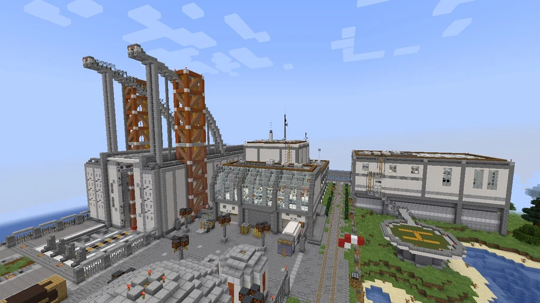
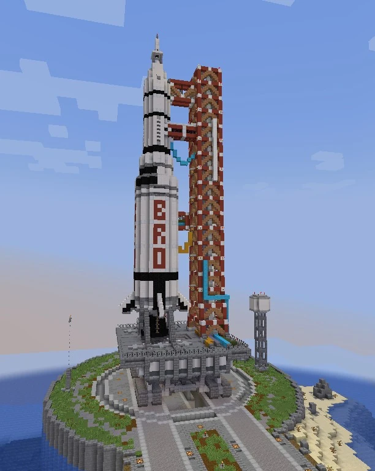
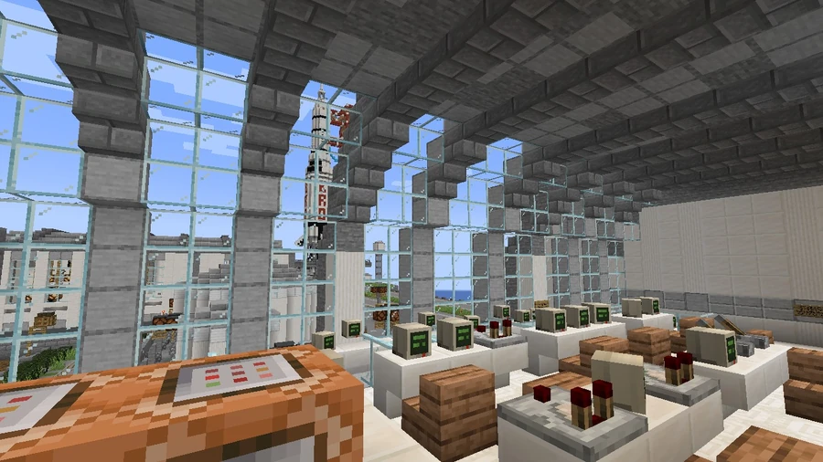
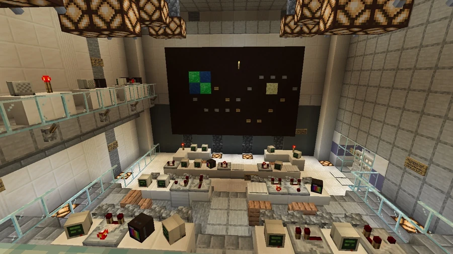

BroSpace Centre
A BroCORP-affiliated space center on the southwest coast, officially called Bro S Space Center for launch and research and served by Space Center station.
Location and arrival
BroSpace Centre, also called The Bro S, occupies a headland on the southwest coast, in the region of the same name identified on the road and district maps. Its access corridor passes through the valley. The main entrance is at −1560, 68, 2705, and the center is served by Broville's regional commuter train, whose diagram names the terminal stop Space Center.
The facility is affiliated with BroCORP and uses the official name Bro S Space Center for launch and research. Its presentation promises “The Pinnacle of Mediocre Space Travel”. A sign welcomes visitors at the entrance, and they must obtain a temporary badge before proceeding.



Facilities and services
The complex contains areas for launch operations, research, preparation and visitors:
- Mission Control.
- Vehicle Assembly Wing.
- Operations & Research Core.
- Training Wing.
- Aerospace Engineering department.
- Laboratory & Testing.
- Tourist Center.
- Shipment Receiving Garage.
It also employs accounting, security and janitorial services. Chaz Yolo is Mission Director, and Kene Granz is Flight Director.
Rules and internal communications
The center's communications declare crew safety the “Lowest Priority”. One comparison claims its public budget exceeds competitor Spess-X's, but classifies the results as INCONCLUSIVE. These messages contribute to the satire of a space institution with questionable performance.
Internal rules prohibit siphoning rocket fuel, removing parts to sell as scrap and selling materials as drugs. Helmets are mandatory beyond a designated area, and a warning states that intruders are liable to be shot.
Documented projects and missions
- EARTHS DIAPER: a mission studying the range of flatulence in space.
- COSMIC PUKE: a mission comparing vomiting in zero gravity.
- CRSH 69316: the reference for the launch simulation supercomputer present at the facility.
- Particle Cannon: a project whose approval is marked PENDING.
The names and notices document activities and proposals at the facility, without establishing a launch outcome or approval for the pending projects.
Gallery









See also
Sources and references
- v11.4.4 maps, signs, books and items World records
- The Bro S (Space Center) · Broville Wiki Community archive
Text adapted and expanded from The Bro S (Space Center) (contributors and history, revision 5013). Adapted text is available under CC BY-SA 3.0.